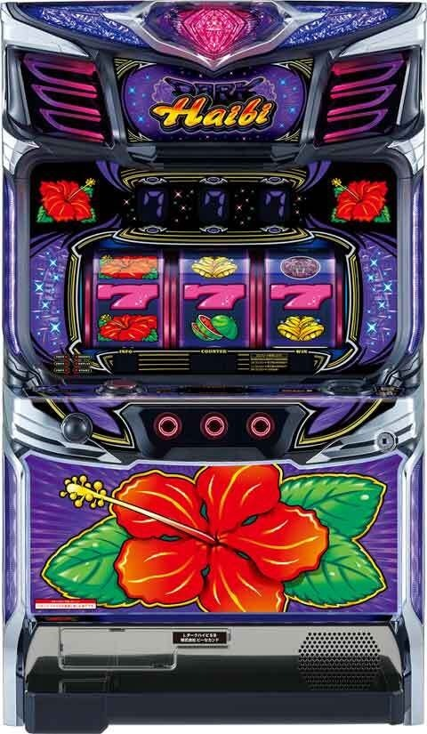
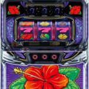
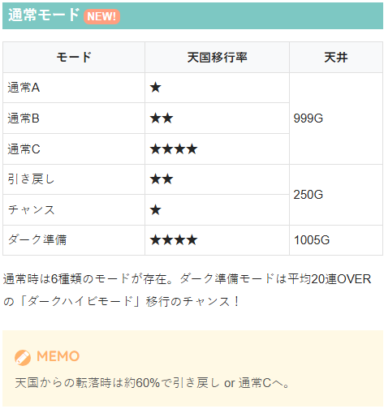
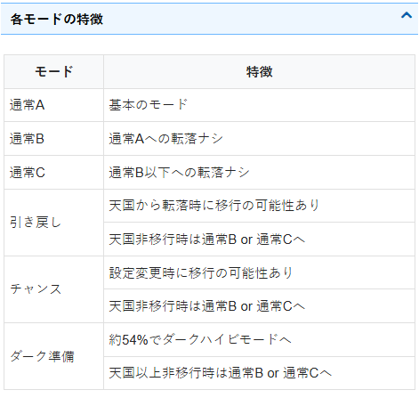
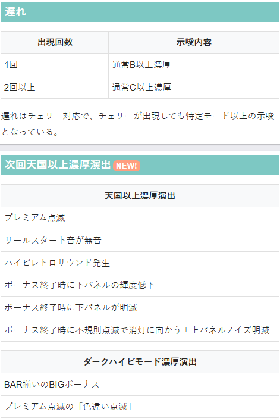
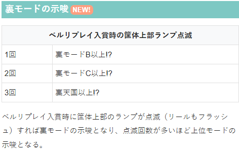

ダークハイビ 🆕


狙い目
※設置台数が極端に少ないため暫定的な狙い目が続きそうです。
【リセット狙い】
0スルー天井狙い
300Gから
2スルー天井狙い
400Gから
0.2スルー以外天井狙い
700Gから
0スルーゾーン狙い
90Gから250Gまで
【ゲーム数天井狙い】
6連以上の天国後かつ0スルー
350Gから
5連以下の天国後かつ0スルー
500Gから
その他
700Gから
【ゾーン狙い】
天国後0スルー 140Gから250Gまで
【示唆関連の押し引きについて】
通常C以上 天国当選まで？
ダーク準備濃厚 ボーナス当選まで？天国当選まで？
【有利区間関連狙い】
不明
やめ時
ボーナス終了後、天国モードの天井である32G回してヤメ。
32G目に小役が成立した場合はもう1G回してやめ（33Gやめ）。
その他
通常モード

各モードの特徴

遅れ、次回天国以上濃厚演出

裏モードの示唆

参考元
かめとうさぎのパチスロブログ
基本情報
- メーカー: パイオニア
- 機械割: 97.5% 〜 110.0%
- 導入開始日: 2026年06月22日（月）
- ゲーム性概要: ●ハイビスカスが光ればボーナス（AT）に当選 ●通常時は6つのモードでボーナス当選時の天国移行期待度が変化 ●通常モードとは別管理の裏モードも存在 ●ボーナスはBIG（約306枚）とREG（約106枚）の2種類 ●ボーナス中はBIGの1G連抽選あり ●天国モード移行で32G以内のボーナス濃厚 ●ダークハイビモードは平均20連オーバー!?


打ち方
打ち方・小役
打ち方（小役狙い）
「最初に狙う絵柄」 左リール上段付近にBARを狙う。 スイカがスベって来た場合のみ、中・右リールにもスイカを狙おう。
「スイカ停止時」 中リールをフリー打ちし、右リールにスイカを狙う（ハイビスカスを目安）。
「レア役の停止例」 ダーク目は確定役的な役で、成立＝ボーナス当選濃厚となる。
変則押しはNG
押し順ナビなし時は順押しでの消化を推奨。ハサミ打ちもNGだ。
解析情報通常時
小役関連
小役確率
| 役 | 確率 |
|---|---|
| ベルリプレイ | 約1/26 |
| チェリー | 約1/52 |
| スイカ | 約1/128 |
| ダーク目 | 約1/1024 |
※小役合算確率は約1/15
モード
通常モードごとの天井ゲーム数
| モード | 天井ゲーム数 |
|---|---|
| 通常A | 約999G |
| 通常B | 約999G |
| 通常C | 約999G |
| 引き戻し | 約250G |
| チャンス | 約250G |
| ダーク準備 | 約1005G |
通常時に変則押しをした場合、天井ゲーム数が1G伸びるため、999Gを超えてもダーク準備確定とならないケースがあるので注意しておきたい。
通常モードの特徴
| モード | 特徴 |
|---|---|
| 通常A | ● 天国移行率：低 |
| 通常B | ● 天国移行率：中 ● 天国移行まで通常Aへの転落ナシ |
| 通常C | ● 天国移行率：高 ● 天国移行まで通常B以下への転落ナシ |
| 引き戻し | ● 天国移行率：中 ● 天国から転落時にのみ移行する可能性あり ● 天国へ移行しなかった場合は通常Bor通常Cへ ※天国からの転落時は約60%で引き戻しor通常Cへ移行 |
| チャンス | ● 天国移行率：低 ● 設定変更時のみ移行する可能性あり、 ● 天国へ移行しなかった場合は通常Bor通常Cへ |
| ダーク準備 | ● 天国移行率：高 ● 約54%でダークハイビモードへ移行 ● 天国以上へ移行しなかった場合は通常Bor通常Cへ |
設定変更時のモード移行率
| モード | 移行率 |
|---|---|
| 通常B以上 | 約30% |
| チャンス | 約40% |
通常モードの移行率は全設定共通となっている。
裏モード概要
裏モード
通常モードとは別軸で存在する、ボーナス当選率に関わるモード
小役でモードアップを、ハズレでモードダウンを抽選
裏天国までアップした場合、 裏モード契機の抽選でボーナスに1回当選するまでモードダウンはナシ
裏モードの種類と特徴
| 裏モード | 特徴 |
|---|---|
| 裏通常A | A＜B＜C＜天国準備の順に、 ボーナス当選期待度がアップ |
| 裏通常B | A＜B＜C＜天国準備の順に、 ボーナス当選期待度がアップ |
| 裏通常C | A＜B＜C＜天国準備の順に、 ボーナス当選期待度がアップ |
| 裏天国準備 | A＜B＜C＜天国準備の順に、 ボーナス当選期待度がアップ |
| 裏天国A | ベルリプレイの約75%でボーナスに当選 |
| 裏天国B | 裏天国Aとボーナス当選率は同じだが、 裏天国Aよりもダウンしづらい |
内部状態に近いイメージのモードで、上位モードほど小役でのボーナス当選期待度がアップする。 裏天国まで上がればベルリプレイの約75%でボーナスに当選。裏天国は1回以上裏モード契機のボーナスに当選するまでモードダウンしない。
裏モードアップ当選率
| 役 | 当選率 |
|---|---|
| ベルリプレイ | 低 |
| チェリー | 約10% |
| スイカ | 約25% |
1契機で1〜3段階モードアップする可能性あり。
フリーズ
ロングフリーズ動画
ダーク目の一部で発生。ダークハイビモード突入濃厚となるプレミアム演出だ。
解析情報ボーナス時
ボーナス
ボーナス概要
「BIGボーナス」
BIG性能
| 1Gあたりの純増 | 約9枚 |
|---|---|
| 獲得枚数 | 約306枚 |
| 消化中の抽選 | 成立役に応じたBIGの1G連抽選 |
［BIGは揃う絵柄にも注目］
BIG絵柄の示唆
| 絵柄 | 示唆 |
|---|---|
| ピンク7 | デフォルト |
| ハイビスカス | BIGの1G連濃厚 |
| BAR | ダークハイビモード濃厚 |
「REGボーナス」
REG性能
| 1Gあたりの純増 | 約9枚 |
|---|---|
| 獲得枚数 | 約106枚 |
| 消化中の抽選 | 成立役に応じたBIGの1G連抽選 |
「筐体全消灯で1G連獲得！」 ボーナス共通で、レア役成立時など、1G連当選時は筐体が全消灯して告知される。
連チャンモード
天国モード性能
| ボーナス確率 | 約1/15 |
|---|---|
| 天井 | 32G |
| ループ率 | 高 |
| 備考 | BIG比率アップ |
ダークハイビモード性能
| ボーナス確率 | 約1/10 |
|---|---|
| 天井 | 32G |
| ループ率 | 超高 |
| 平均連チャン回数 | 20連以上 |
| 備考 | BIG比率大幅アップ |
天国・ダークハイビモードともに32G以内のボーナス当選濃厚。 ダークハイビモードは平均連チャン回数が20連オーバーと強力なので、大量出玉獲得必至のモードといえる。
ダークハイビモードの移行契機
| 通常時 | ● ダーク準備モード中のボーナス当選時の約54% ● ダーク目契機のロングフリーズ後 |
|---|---|
| ボーナス後 | ● 32G目にダーク目成立時の一部 |
| 天国中 （連チャン中） | ● 累計獲得枚数に応じた抽選 ● ダークポイント5pt以上獲得後 ● 裏天国契機のボーナス当選時の約40% |
| 設定変更時を除く 有利区間リセット時 | ● 50%以上（約40%で天国へ） |
ダークカウンタA
| カウンタ 加算契機 | ボーナス当選時に、 累計の獲得枚数を参照して1～5ptを加算 |
|---|---|
| 5pt以上獲得時 | ダークハイビモードへ移行 |
| カウンタ リセット契機 | ボーナス後32Gを抜けた後、 毎ゲーム約20%でカウンタがリセット |
ダークカウンタB
| カウンタ 加算契機 | ボーナス消化中のチェリー・スイカで加算を抽選 （当選時は1pt加算） |
|---|---|
| 5pt以上獲得時 | 次回のボーナス時にダークハイビモードへ移行 |
| カウンタ リセット契機 | ボーナス後32Gを抜けた後、 毎ゲーム約20%でカウンタがリセット |
内部的に2種類のダークカウンタが存在していて、いずれかが5ptに到達するとダークハイビモードに突入濃厚（それぞれのポイントは別カウント）。 ロングフリーズ後など特殊な状況を除き、基本的には連チャンするほど（獲得枚数が増えるほど）ダークハイビモード突入の期待度がアップすると考えてOKだ。
ボーナス後32G目の抽選
「ボーナス後32G目がポイント」 ボーナス後32G間は天国・ダークハイビモードでの連チャンに期待する区間。いずれのモードにも滞在していなくても、32G目に小役を引けばボーナス当選濃厚となる。
ボーナス後32G目の小役での抽選内容
| 役 | 特徴 |
|---|---|
| ベルリプレイ | ボーナス＋天国のチャンス |
| チェリー | ボーナス＋天国濃厚 |
| スイカ | ボーナス＋天国濃厚 |
| ダーク目 | ボーナス＋天国orダークハイビモード |
※小役合算確率は約1/15
レア役を引けば天国移行も濃厚！
ツラヌキ・有利区間
ツラヌキ条件と恩恵
| 条件 | 規定枚数獲得後 |
|---|---|
| 恩恵 | 約40%で天国へ、50%以上でダークハイビモードへ移行 |
演出情報
カスタム
レア役告知モード
| 変更方法 | デモ待機中に右ボタンを長押し |
|---|---|
| 効果 | レア役成立時に筐体上部のランプ点灯＆予告音が発生 |
| 備考 | レア役告知モード中はフェザーランプが白く点灯 |
デモ待機中に右ボタンを長押しすると、レア役告知モードへ変更可能。 レア役告知モード中はレア役成立時に筐体上部のランプ点灯＆予告音が発生する。
通常時
通常モード示唆演出
| 演出 | 示唆 |
|---|---|
| 遅れ＋チェリー | 1回発生：通常B以上濃厚 ボーナス間で2回以上発生：通常C以上濃厚 |
［遅れ＋チェリー］ ボーナス間で遅れ＋チェリーが2回以上発生した場合は通常C以上濃厚なので、天国へ移行するまで打つことをオススメしたい。
次回天国濃厚演出
プレミアム点滅（色違い点滅を除く）発生
リールスタート音が無音
ハイビレトロサウンド発生（ボーナス終了時に特殊演出発生）
ボーナス終了時に下パネルの輝度が低下
ボーナス終了時に下パネルが明滅
ボーナス終了時に不規則点滅で消灯に向かう＋上パネルノイズ明滅
通常点滅以外はすべてBIG＋天国濃厚。色違い点滅はダークハイビモード濃厚だ。
次回ダークハイビモード濃厚演出
BAR揃いのBIGボーナス
プレミアム点滅の「色違い点滅」発生
裏モード示唆
「筐体上部ランプ点滅＆リールフラッシュ」
筐体上部ランプ点滅（リールフラッシュ）回数ごとの示唆
| 回数 | 示唆 |
|---|---|
| 1回 | 裏モード通常B以上 |
| 2回 | 裏モード通常C以上 |
| 3回 | 裏モード天国以上 |
ベルリプレイ入賞時に筐体上部のランプが点滅すれば、上位の裏モード滞在を示唆。 筐体上部ランプ点滅時は連動してリールもフラッシュする。
ボーナス中
フェザーランプフラッシュ色での示唆 （ダークカウンタAのポイント示唆）
| 色 | 示唆 |
|---|---|
| 青 | ダークカウンタ加算濃厚 |
| 黄or緑 | ダークカウンタ2pt以上保有濃厚 |
| 赤 | ダークカウンタ3pt以上保有濃厚 |
| 紫 | ダークカウンタ4pt以上保有濃厚 |
| 虹 | 次回天国濃厚 |
ボーナス中にフェザーランプの色が変化すればダークカウンタのポイント数を示唆。 虹はポイント示唆ではなく、次回天国濃厚となる。
［フェザーランプ］ ボーナス中はフェザーランプの色変化にも注目！